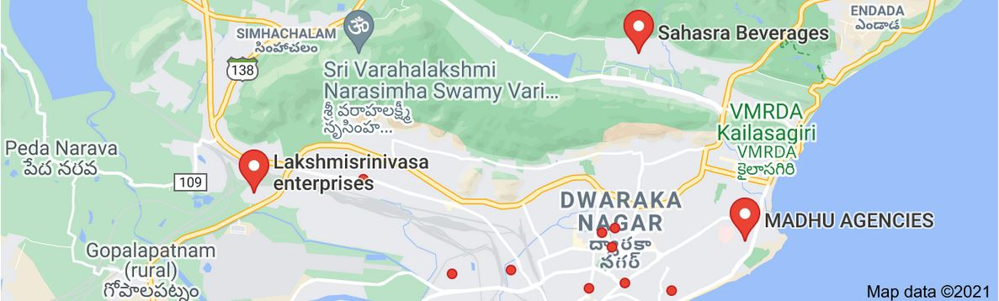

<div class="fade-in">
  <c-card>
    <c-card-header>Google Maps
      <!-- Google Maps <c-badge color="info"></c-badge> -->      
    </c-card-header>
    <c-card-body>
      <div *ngIf="gmLoader.apiLoaded | async">
        <!-- this creates a google map on the page with the given lat/lng from -->
        <!-- the component as the initial center of the map: -->
         <google-map 
         #myGoogleMap
          height="450px"
          width="100%"
          [zoom]="zoom"
          [center]="center"
          [options]="options"
          
         >
          <map-marker #marker="mapMarker"
                      *ngFor="let m of markers; let i = index"
                      [label]="m.label"
                      [title]="m.title"
                      [position]="m.position"
                      [options]="markerOptions"
                      (mapClick)="openInfoWindow(marker, m)">
          </map-marker>
          <map-info-window>
            <a href="{{activeInfoWindow?.www}}" target="_blank" class="px-2"><strong>{{activeInfoWindow?.title}}</strong></a>
          </map-info-window>
          <map-info-window>{{ infoContent }}</map-info-window>
        </google-map> 
        <!--  -->
      </div>
      <div>
      </div>

    </c-card-body>
  </c-card>
</div>
